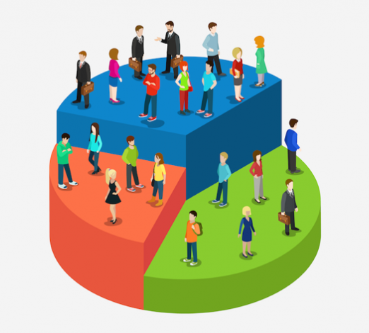

Telecom provider · Data Scientist · 2023–2025
Churn-Driver Segmentation
A churn model already said who was likely to cancel. Retention teams also needed to know why, to pick the right action for each customer.
1.6M
customer base
~200k
high-risk customers segmented per month
3
churn-cause segments
Monthly
model run
01From customer base to causes
Bar lengths are proportional to the real counts: about 1 in 8 customers is segmented each month.
- 01Technical causeService malfunction.
- 02Commercial causePayment problems.
- 03Technical + commercialBoth at once.
02Data
| Feature | Treatment |
|---|---|
| Last and total invoiced (USD) | Quantile encoding (quintiles) |
| Months as a customer | Quantile encoding (quintiles) |
| Payment method | One-hot encoding |
| Calls to customer service | Quantile encoding (quintiles) |
| Number of discounts | Quantile encoding (quintiles) |
| Churn probability | Filter: only high-risk customers |
Source: ~1.6M customers in a Presto database. Missing values were filled, and features were selected with the churn model's correlation and variance analysis. Quintiles capture non-linear relationships.
03Visuals
Shows how K-Means separates customers into three groups. Cluster sizes are not real.

04Impact
Retention teams know the likely cause behind each high-risk customer and can take a matching preventive action: fix the service, or solve the payment problem.